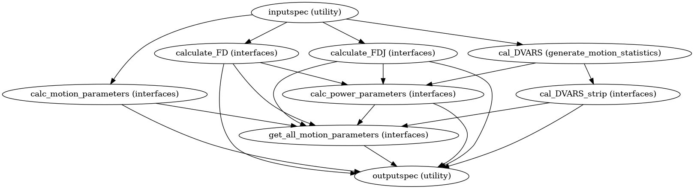

Generate Motion and Power Statistics#
Functions for generating motion statistics
- class CPAC.generate_motion_statistics.ImageTo1D(**inputs)[source]#
- input_spec#
alias of
CPAC.generate_motion_statistics.generate_motion_statistics.ImageTo1DInputSpec
- output_spec#
alias of
CPAC.generate_motion_statistics.generate_motion_statistics.ImageTo1DOutputSpec
- CPAC.generate_motion_statistics.affine_file_from_params_file(params_file: str, affine_file: Optional[str] = None) str[source]#
Convert a 6-DOF motion parameters array into a 4x4 affine matrix.
- Parameters
params_file (str) – path to a motion parameter file (6 DOF, one timepoint per line)
affine_file (str) – path to a 4x4 affine matrix file (the first 12 values, one timepoint per line), optional If included, comments will be passed on to filtered affine file
- Returns
affine_file – path to a 4x4 affine matrix file (the first 12 values, one timepoint per line)
- Return type
str
- CPAC.generate_motion_statistics.affine_from_params(params: numpy.ndarray) numpy.ndarray[source]#
Convert a 6-DOF motion parameters array into a 4x4 affine matrix
- Parameters
params (np.ndarray) – 2-dimensional array (t x 6) with the first dimension as timepoints and the second dimension containing these 6 elements (as output by 3dvolreg -1Dfile): roll, pitch, yaw in degrees counterclockwise, and displacement in millimeters in the respective superior, left and posterior directions
- Returns
affine – t x 4 x 4 affine matrix with the upper-left 3 x 3 matrix encoding rotation, the top three values in the fourth column encoding translation and the bottom row being [0, 0, 0, 1] for each timepoint
- Return type
np.ndarray
- CPAC.generate_motion_statistics.calculate_DVARS(func_brain, mask)[source]#
Method to calculate DVARS as per power’s method
- Parameters
func_brain (string (nifti file)) – path to motion correct functional data
mask (string (nifti file)) – path to brain only mask for functional data
- Returns
out_file – path to file containing array of DVARS calculation for each voxel
- Return type
string (numpy mat file)
- CPAC.generate_motion_statistics.calculate_FD_J(in_file: str, calc_from: Literal['affine', 'rms'], center: Optional[numpy.ndarray] = None) str[source]#
Method to calculate framewise displacement as per Jenkinson et al. 2002
- Parameters
in_file (string) – matrix transformations from volume alignment file path if calc_from is ‘affine’, or FDRMS (*_rel.rms) output if calc_from is ‘rms’.
calc_from (string) – one of {‘affine’, ‘rms’}
center (ndarray, optional) – optional volume center for the from-affine calculation
- Returns
out_file – Frame-wise displacement file path
- Return type
string
Examples
>>> import gzip, os, pickle >>> from unittest import mock >>> import numpy as np >>> with gzip.open('/code/CPAC/generate_motion_statistics/test/' ... 'fdj_test_data.pklz') as _pickle: ... test_data = pickle.load(_pickle) >>> with mock.patch('nibabel.load', ... return_value=test_data.img), mock.patch( ... 'numpy.genfromtxt', return_value=test_data.affine): ... fdj_file = calculate_FD_J(test_data.affine, calc_from='affine', ... center=find_volume_center(test_data.img)) >>> all(np.isclose(np.genfromtxt(fdj_file), ... np.insert(test_data.rels_rms, 0, 0), atol=0.001)) True >>> os.unlink(fdj_file)
- CPAC.generate_motion_statistics.calculate_FD_P(in_file)[source]#
Method to calculate Framewise Displacement (FD) as per Power et al., 2012
- Parameters
in_file (string) – movement parameters vector file path
- Returns
out_file – Frame-wise displacement mat file path
- Return type
string
- CPAC.generate_motion_statistics.gen_motion_parameters(subject_id, scan_id, movement_parameters, max_displacement, motion_correct_tool)[source]#
Method to calculate all the movement parameters
- Parameters
subject_id (string) – subject name or id
scan_id (string) – scan name or id
max_displacement (string) – path of file with maximum displacement (in mm) for brain voxels in each volume
movement_parameters (string) – path of 1D file containing six movement/motion parameters(3 Translation, 3 Rotations) in different columns (roll pitch yaw dS dL dP)
- Returns
out_file – path to csv file containing various motion parameters
- Return type
string
- CPAC.generate_motion_statistics.gen_power_parameters(subject_id, scan_id, fdp=None, fdj=None, dvars=None, motion_correct_tool='3dvolreg')[source]#
Method to generate Power parameters for scrubbing
- Parameters
subject_id (string) – subject name or id
scan_id (string) – scan name or id
FDP_1D (string) – framewise displacement(FD as per power et al., 2012) file path
FDJ_1D (string) – framewise displacement(FD as per jenkinson et al., 2002) file path
threshold (float) – scrubbing threshold set in the configuration by default the value is set to 1.0
DVARS (string) – path to numpy file containing DVARS
- Returns
out_file – path to csv file containing all the pow parameters
- Return type
string (csv file)
- CPAC.generate_motion_statistics.motion_power_statistics(name='motion_stats', motion_correct_tool='3dvolreg', filtered=False)[source]#
- The main purpose of this workflow is to get various statistical measures
from the movement/motion parameters obtained in functional preprocessing.
:param : :type : param str name: Name of the workflow, defaults to ‘motion_stats’ :param : :type : return: Nuisance workflow. :param : :type : rtype: nipype.pipeline.engine.Workflow
Notes
Workflow Inputs:
inputspec.subject_id : string Subject name or id inputspec.scan_id : string Functional Scan id or name inputspec.motion_correct : string (func/rest file or a list of func/rest nifti file) Path to motion corrected functional data inputspec.max_displacement : string (Mat file) maximum displacement (in mm) vector for brain voxels in each volume. This file is obtained in functional preprocessing step inputspec.movement_parameters : string (Mat file) 1D file containing six movement/motion parameters(3 Translation, 3 Rotations) in different columns (roll pitch yaw dS dL dP), obtained in functional preprocessing step
Workflow Outputs:
outputspec.FDP_1D : 1D file mean Framewise Displacement (FD) outputspec.power_params : txt file Text file containing various power parameters for scrubbing outputspec.motion_params : txt file Text file containing various movement parameters
Order of commands:
Calculate Framewise Displacement FD as per power et al., 2012
Differentiating head realignment parameters across frames yields a six dimensional timeseries that represents instantaneous head motion. Rotational displacements are converted from degrees to millimeters by calculating displacement on the surface of a sphere of radius 50 mm.[R5]
Calculate Framewise Displacement FD as per jenkinson et al., 2002
Calculate DVARS
DVARS (D temporal derivative of timecourses, VARS referring to RMS variance over voxels) indexes the rate of change of BOLD signal across the entire brain at each frame of data.To calculate DVARS, the volumetric timeseries is differentiated (by backwards differences) and RMS signal change is calculated over the whole brain.DVARS is thus a measure of how much the intensity of a brain image changes in comparison to the previous timepoint (as opposed to the global signal, which is the average value of a brain image at a timepoint).[R5]
Calculate Power parameters:
MeanFD : Mean (across time/frames) of the absolute values for Framewise Displacement (FD), computed as described in Power et al., Neuroimage, 2012) rootMeanSquareFD : Root mean square (RMS; across time/frames) of the absolute values for FD rmsFD : Root mean square (RMS; across time/frames) of the absolute values for FD FDquartile(top 1/4th FD) : Mean of the top 25% highest FD values MeanDVARS : Mean of voxel DVARS
Calculate Motion Parameters
Following motion parameters are calculated:
Subject Scan Mean Relative RMS Displacement Max Relative RMS Displacement Movements > threshold Mean Relative Mean Rotation Mean Relative Maxdisp Max Relative Maxdisp Max Abs Maxdisp Max Relative Roll Max Relative Pitch Max Relative Yaw Max Relative dS-I Max Relative dL-R Max Relative dP-A Mean Relative Roll Mean Relative Pitch Mean Relative Yaw Mean Relative dS-I Mean Relative dL-R Mean Relative dP-A Max Abs Roll Max Abs Pitch Max Abs Yaw Max Abs dS-I Max Abs dL-R Max Abs dP-A Mean Abs Roll Mean Abs Pitch Mean Abs Yaw Mean Abs dS-I Mean Abs dL-R Mean Abs dP-A
High Level Workflow Graph:
Detailed Workflow Graph:

Examples
>>> from CPAC import generate_motion_statistics >>> wf = generate_motion_statistics.motion_power_statistics("generate_statistics") >>> wf.inputs.inputspec.movement_parameters = 'CPAC_outupts/sub01/func/movement_parameteres/rest_mc.1D' >>> wf.inputs.inputspec.max_displacement = 'CPAC_outputs/sub01/func/max_dispalcement/max_disp.1D' >>> wf.inputs.inputspec.motion_correct = 'CPAC_outputs/sub01/func/motion_correct/rest_mc.nii.gz' >>> wf.inputs.inputspec.mask = 'CPAC_outputs/sub01/func/func_mask/rest_mask.nii.gz' >>> wf.inputs.inputspec.transformations = 'CPAC_outputs/sub01/func/coordinate_transformation/rest_mc.aff12.1D' >>> wf.inputs.inputspec.subject_id = 'sub01' >>> wf.inputs.inputspec.scan_id = 'rest_1' >>> wf.base_dir = './working_dir' >>> wf.run()
References
- 1
Power, J. D., Barnes, K. A., Snyder, A. Z., Schlaggar, B. L., & Petersen, S. E. (2012). Spurious but systematic correlations in functional connectivity MRI networks arise from subject motion. NeuroImage, 59(3), 2142-2154. doi:10.1016/j.neuroimage.2011.10.018
- 2
Power, J. D., Barnes, K. A., Snyder, A. Z., Schlaggar, B. L., & Petersen, S. E. (2012). Steps toward optimizing motion artifact removal in functional connectivity MRI; a reply to Carp. NeuroImage. doi:10.1016/j.neuroimage.2012.03.017
- 3
Jenkinson, M., Bannister, P., Brady, M., Smith, S., 2002. Improved optimization for the robust and accurate linear registration and motion correction of brain images. Neuroimage 17, 825-841.
{kind=link}